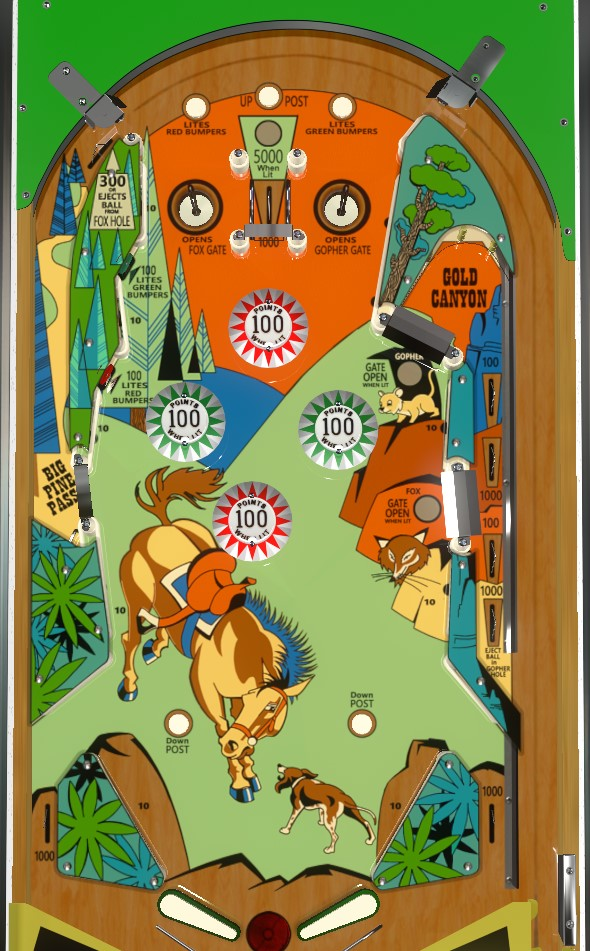

On the plunge, shoot the top right saucer for a lock if it is available, otherwise plunge for the top center lane to release all locked balls and start multiball. If the ball gets to the flippers, use the right flipper to revisit the top of the table via the Big Pine Pass kicker or a ricochet to the left of the bumpers, and use the left flipper to shoot the gopher or fox gates on the left if they have been opened by locking a ball in the corresponding top saucer.
The below image of Big Valley's playfield was taken from the VPX recreation by Loserman76.
Lock a ball at any time in the two saucers at the top of the playfield. The left saucer lights the lower right fox gate, and the right saucer lights the upper right gopher gate. The center top lane scores 1,000 points plus an additional 2,000 per locked ball, and releases all locked balls. Using the left Big Pine Pass kicker lane ejects the left saucer if a ball is locked there; using either right gate ejects a ball in the right lock, if there is one. Balls can be relocked at any time, including during multiball. Watch the timing of playfield events carefully; if you relock a ball and then the remaining ball drains, it will be the end of your turn, but if a ball drains and then a relock happens, the relock happening last means your turn will continue with a new plunged ball.
There are two red and two green bumpers. All bumpers score 10 points or 100 when lit. Standup targets to the left of the bumpers and rollover buttons directly above the lock saucers light the red or green bumpers as indicated. Once a bumper colour is lit, it stays lit for the remainder of the ball.
This lane scores 300 points and kicks the ball back to the top of the playfield. If a ball has been locked in the left (fox) saucer, 3,000 additional points are scored and the fox lock is kicked out, starting multiball. It's more common for the ball to end up in this kicker lane from a ricochet off a bumper or right slingshot than a direct shot from the flipper.
The right lane has two entrances, and both of them are closed until a ball has been locked in one of the top saucers. The upper gopher gate is open whenever there is a ball in the right lock; using it scores a total of 4,200 points, puts the current playfield ball back into the shooter lane for a replunge, and releases the the right (gopher) lock. The lower fox gate is open whenever there is a ball in the left lock. Using the fox gate when there is no ball in the right lock scores 1,100 points and a replunge; using the fox gate when there is a ball in the right saucer scores 3,100 points, a replunge, and releases the right lock.
Important tournament note: if playing Big Valley in a competition setting, verify with a tournament director whether it is an approved multiball scenario to leave one ball in the shooter lane after using the Gold Canyon while a locked ball is still on the playfield. Official IFPA rules say that the ball in the shooter lane must be plunged immediately or it is considered a violation of stuck ball rules, but many tournaments would likely waive that rule given how locking and relocking on this game works.
There are no in lanes. Flippers back up directly to the slingshots. Full size 3 inch flippers are used. Slingshots score 10 points. Out lanes score 1,000 points. There is a center post between the flippers that completely blocks off the center drain when raised; it is only raised via the rollover button directly above the center top lane, and it is lowered by the rollover buttons near the slingshots. The center post tends not to come into play very often.
There is no end-of-ball bonus, extra ball, or playfield special.